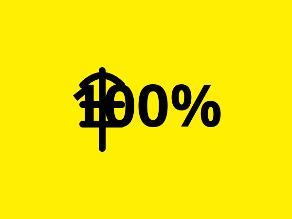
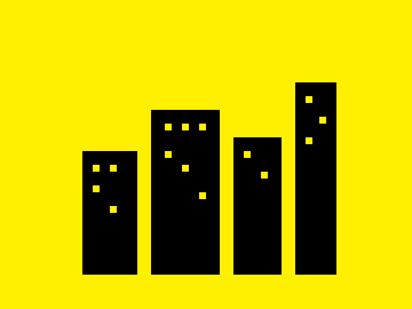
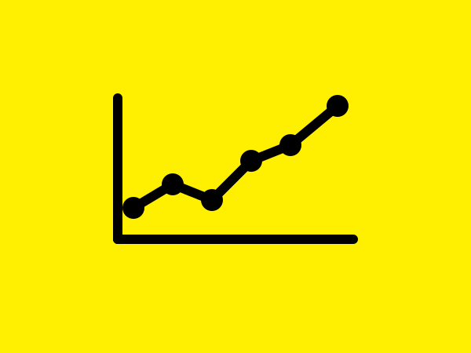
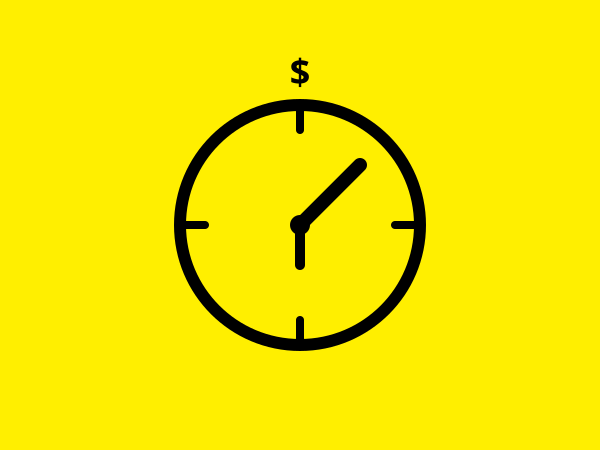

From the road.
Product news, city launches, driver stories, and what we're learning as we build a fairer marketplace.
Announcement
Joyride launches in Austin this fall — meet our first 200 drivers.
We're starting in Austin because Austin asked first. Here's what to expect on day one — and how we picked our founding driver class.
April 18, 2026 · 6 min read

What "100% of the fare" actually looks like at the end of the month.
Three Austin drivers walk through their first earnings statements — and what changed.
Why we built saved drivers and recurring trips first.
Repeat business is the foundation of any real service work. Here's how we shipped it.

Denver and Portland — what we're hearing from drivers there.
We've talked to 400 drivers across two cities. Here are the patterns.
Transparent pricing isn't just better for drivers — it's better for riders.
What happens when you remove the surge math from the equation.

The marketplace economics behind Joyride.
Why a flat subscription beats a percentage cut for both sides — and how the math holds up at scale.

How to set your rates: a working guide for new Joyride drivers.
What to charge, when to charge it, and how to win repeat riders.